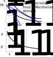
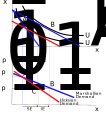
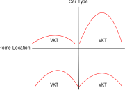
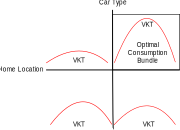
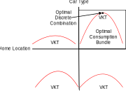

Lecture 1 - Microeconomics
ENCI707: Engineering Demand and Policy Analysis
Outline
- Microeconomic theory of demand
- Quantitative analysis of consumer demand
- Concept of utility
- Direct/indirect utility
- Demand function
- Functional forms of demand function
Microeconomic Theory of Demand
Microeconomics
- Branch of economics dealing with behaviour of economic agents including:
- Consumers
- Labour force (workers)
- Firms
- Investors
- Markets: Interactions among all of the above
- Demand-Supply:
- Demand function representing behavior of users/agents
- Supply function representing level-of-service, congestion, & behavior of service providers
- Market clearance = demand & supply equilibrium
Demand-Supply Relationship
- Short-term demand-supply: Ex. Roadway link at an instant
- Long-term demand-supply: Ex. Residential housing
- Equilibrium
Shifting Curves
Comparative Statics
- Create a model of market behavior:
- Explain consumer & firm choices as functions of exogenous variables – e.g., income & government policy
- Develop scenarios
- Changes in exogeneous variables
- Derive changes in the endogenous variables
Comparative Statics Example
- The market for taxi service:
- Supply function: \(Q_S\) = – 125 + 125P
- Demand function: \(Q_D\) = 1000 – 100P
- Where does the market clear?
- What happens if demand shifts such that now \(Q_D\) = 1450 – 100P?
Comparative Statics Example - SOLUTION
Quantitative Analysis of Consumer Demand
Concept of Utility
- Utility: a measure of benefit or attractiveness of alternative courses of action
- Assumption that people choose action that maximizes utility (profit) and minimizes disutility (cost)
- An abstract/latent concept that gives only ordinal ranking:
- No inherent meaning
- No generic unique function
- Unaffected by monotonic transformation
- Utility measures:
- Direct utility: f(quantity of consumption)
- Indirect utility: f(utility of consumption)
Consumption Set: Bundle of Choices
- Derive demand function based on concept of utility maximization subject to budget and constraints
- Consumption set [X]: a possible bundle of choices (goods: real or virtual)
- Consumer has preferences over the consumption set
- Properties of a consumption bundle (of the mathematical function defining bundle):
- Complete, reflexive, transitive, continuous, and convex
Properties of a Consumption Bundle
- Completeness: \(A \succsim B \vee A \precsim B\) (weak preference) - You have preferences
- Reflexivity: \(A \sim A\) - You are indifferent between copies of the same product
- Transitivity: \(A \succsim B \wedge B \succsim C -> A \succsim C\) - If you prefer A over B and B over C, then you must prefer A over callout
- Continuity: Preferences are continuous and can be represented by continuous utility functions
- Convex: For x, y, z \(\in\) X where \(y \succsim x\) and \(z \succsim x\) \(\forall \theta \in [0,1]\)
\(\theta y + (1-\theta)z \succsim x\) - For any two bundles that are each viewed as at least as good as a third bundle, a weighted average of the two bundles is viewed as being at least as good as the third bundle
Utility Function & Consumption Set
Utility Function: Summary of a consumer’s behaviour by means of a mathemnatical function
- A continuous function
\[f(U(x)) \ge f(U(y)) \text{ iff } U(x) \ge U(y)\]
- Utility is better presented in ordinal sense than in cardinal numbers
Utility Function: Diminishing Marginal Utility of Consumption
Consumption Demand
- Consumers are utility maximizers: Consumers maximize utility subject to budget/income constraints
- Facing prices (p) of goods/services (consumption) and budget constraints (I=income)
- Consumer allocates income across goods/services to maximize utility (U)
- Marshallian (Uncompensated) Demand: Demand for items that maximizes the utility of consumption subject to a constrained budget
- Hicksian (Compensated) Demand: Demand for items that minimizes expenditure to attain a certain (fixed) level of consumption utility
Demand Functions
- Functions explaining quantity demanded as function of price, income (or total available budget), utility, etc.
- Marshallian Demand Function: Utility maximization subject to optimal allocation of budget to consumption of goods
- Uses direct utility function
- Concept of production function (for firms)
- Hicksian Demand Function: Expenditure minimization subject to optimal level of utility of consumption bundle:
- Uses indirect utility function
- Concept of expenditure function (for firms)
- Marshallian Demand Function: Utility maximization subject to optimal allocation of budget to consumption of goods
Indirect Utility and Demand
\[V(\mathbf{p},I) = \max U(\mathbf{x}) \text{ such that } \mathbf{px} = I\]
- Indirect Utility Function: The function \(V(\mathbf{p},I)\) that gives the maximum utility achievable at a given price vector (\(\mathbf{p}\)) and income \(I\) is called the indirect utility function
- Consumption Bundle: The value of \(\mathbf{x}\) that solves the maximization problem is called the demanded bundle
- Demand Function: The function that connects \(\mathbf{p}\) and \(I\) is called the demand function
Indirect Utility Function
- Often useful to consider utility obtained by a consumer as an indirect measure - as a function of prices and income rather than actual consumed quantities
- Assume that \(V(p_1,p_2,I)\) is our indirect utility (value) function
\[ \begin{align*} V(p_1, p_2, I) &= U(x_1^*, x_2^*) \\ &= U(x_1(p_1, p_2, I), x_2(p_1, p_2, I)) \end{align*} \]
Marshallian Demand Function
- When the indifference curves are strictly convex, the solution is unique
\[x_1^* = x_1(p_1, p_2, I)\]
\[x_2^* = x_2(p_1, p_2, I)\]
- If quantity demanded is expressed as a function of prices and income (or total available budget), called Marshallian demand function
Definition of Goods
Ordinary Good
\(\frac{dx_1(p_1,p_2,I)}{dp_1} < 0\)
Giffen Good
\(\frac{dx_1(p_1,p_2,I)}{dp_1} > 0\)
Complementary Goods
\(\frac{dx_2(p_1,p_2,I)}{dp_1} < 0\)
Substitutional Goods
\(\frac{dx_2(p_1,p_2,I)}{dp_1} > 0\)

Definition of Goods
- Income elasticity of demand
\(\eta = \frac{dx_1}{dI}\frac{I}{x_1}\)
\(\frac{dx_1(p_1,p_2,I)}{dI} < 0\) -> Inferior Good \(\eta < 0\)
\(\frac{dx_1(p_1,p_2,I)}{dI} > 0\) -> Normal Good \(\eta > 0\)
\(\frac{dx_1(p_1,p_2,I)}{dI} > \frac{x_1}{I}\) -> Superior Good \(\eta > 1\)
Hicksian Demand Function
- When indifference curves are strictly convex, the solution is unique where
\[x_1^* = x_1(p_1,p_2,U) \text{ and } x_2^* = x_2(p_1,p_2,U)\]
- If quantity demanded is expressed as a function of prices and utility, called Hicksian demand function
- Hicksian demand tells us what consumption bundle achieves a target level of utility and minimizes total expenditure
- As it is based on indirect utility, Hicksian demand is not directly observable
Marshallian & Hicksian Demand

Can use Slutsky equation to obtain an analytic result
\[\frac{\partial x_1}{\partial p_2} = \underset{\text{Substitution Effect}}{\frac{\partial h_1(p_1,p_2,u)}{\partial p_2}} - \underset{\text{Income Effect}}{\frac{\partial x_1}{\partial I}x_2(p_1,p_2,I)}\]
where
- \(h_1(p_1,p_2,U)\) is the Hicksian demand for good 1
- \(U = v(p_1,p_2,I)\) is the desired indirect utility level
- \(x_1(p_1,p_2,I)\) is the Marshallian demand for good 1 (similar for good 2)
Indifference Curves
- Let \(U(x_1,x_2,\dots)\) be a twice differentiable utility function. If we increase the quantity of goods, how does the consumer respond?
- Indiference curve: shows combination of commodities for which total utility is constant
- Changes in total utility are zero for any change in the consumption bundle on the same indifference curve
Marginal Rate of Substitution (MRS)
Direct Utility Maximization
A utility function that is a function of quantity consumed (i.e., indifference curves)
\[x^*(\mathbf{p},I)=\max U(x_1,x_2)\]
\[\text{Subject to } p_1x_1+p_2x_2 \le I\]
Using Lagrangian
\[L = U(x_1,x_2) + \lambda(I - p_1x_1 - p_2x_2)\]
First order conditions for optimum consumption
\[\frac{\partial L}{\partial x_1} = 0 \text{ and } \frac{\partial L}{\partial x_2} = 0\]
\[\frac{\partial U(x_1,x_2)}{\partial x_1} = \lambda p_1 \text{ and } \frac{\partial U(x_1,x_2)}{\partial x_2} = \lambda p_2\]
Direct Utility Maximization
Langrangian Multipler (\(\lambda\)) can be eliminated by taking a ratio of partial derivatives
\[\frac{\frac{\partial U(x_1,x_2)}{\partial x_2}}{\frac{\partial U(x_1,x_2)}{\partial x_1}} = \frac{\lambda p_2}{\lambda p_1} = \frac{p_2}{p_1}\]
- Ratio of price = Marginal Rate of Substitution (MRS) = slope of indifference curve
- \(p_1x_1 + p_2x_2 = I\) is the budget line
- Point of tangency between indifference curve and budget line = point of optimal consumption
Envelope Theorem
- Utility (value) function forms an upper envelope of the graphs of the parameterized family of function \({U(x,\cdot)}_{x \in X}\)
- Given an exogenous parameter (\(a\)) that affects \(U(x_1,x_2,a)\), we can obtain the following useful relationship
\[\frac{\partial U(x_1,x_2,a)}{\partial a} = \frac{\partial L(x_1^*,x_2^*,a)}{\partial a}\]
Marginal Utility of Income (Application of Envelope Theorem)
- Income is an exogenous input from the perspective of optimization
\[\frac{\partial L(x_1^*,x_2^*)}{\partial I} = \frac{\partial U(x_1^*,x_2^*)}{\partial I} = \lambda\]
- \(\lambda\) is the marginal utility of income
Indirect Utility Function
Indirect utility optimization is the dual of primal direct utility optimization (expenditure function) - minimize expenditure to maintain utility \(\bar{U}\) \[V(p_1,p_2,I) = \min_{p_1,p_2} p_1x_1 + p_2x_2 - \lambda (\bar{U} - U(x_1,x_2))\] \[\text{s.t. } U(x_1,x_2) \ge \bar{U}\]
Equivalently, by duality (indirect utility function) - maximize utility at prices \(p_1,p_2\) \[V(p_1,p_2,I) = \max_{p_1,p_2} U(x_1^*,x_2^*) + \lambda (I - p_1x_1 + p_2x_2)\] \[\text{s.t. } p_1x_1 + p_2x_2 \le I\]
Properties of Indirect Utility Function
- Property 1: \(V(\mathbf{p},I)\) is non-increasing in prices \(\mathbf{p}\) and non-decreasing in income \(I\)
- Any increase in prices or decrease in income contracts the affordable set of commodities - nothing new is available to the consumer, so utility cannot increase
- Property 2: \(V(\mathbf{p},I)\) is homogeneous degree zero
- No change in the affordable set or preferences if both prices and income are increased or decreased by a constant
Roy’s Identity (Another Application of Envelope Theorem)
- Connects Marshallian demand function and indirect utility function
- Similarly, Sheppard’s lemma connects Hicksian demand function and expenditure function
Roy’s Identity (Another Application of Envelope Theorem)
\[V(p_1,p_2,I) = U(x_1^*,x_2^*) + \lambda (I - p_1x_1 - p_2x_2)\] \[\frac{\partial V(p_1,p_2,I)}{\partial p_1} = - \lambda x_1(p_1,p_2,I)\] \[\frac{\partial V(p_1,p_2,I)}{\partial I} = \lambda\] \[x_1(p_1,p_2,I) = - \frac{\frac{\partial V(p_1,p_2,I)}{\partial p_1}}{\frac{\partial V(p_1,p_2,I)}{\partial I}} \text{(direct utility from indirect utility)}\]
Continuous Demand
Functional Forms for Demand/Production/Expenditure
- Cobb-Douglas function
- Transcendental logarithm (translog) function
- Constant elasticity of substitution (CES) function
- Almost ideal demand system (AIDS)
Cobb-Douglas Direct Utility Function
Simple example \[\max U(x_1,x_2) = x_1^{\alpha}x_2^{\beta}\] \[\text{s.t. } p_1x_1+p_2x_2 \le I\]
Langrangian \(L = x_1^{\alpha}x_2^{\beta} + \lambda(I - p_1x_1 - p_2x_2)\)
Cobb-Douglas Direct Utility Function
- Applying first order conditions (FOC) for optimal utility \[\frac{\partial L}{\partial x_1} = 0 \text{->} \alpha x_1^{\alpha - 1}x_2^{\beta} = \lambda p_1\] \[\frac{\alpha U}{x_1} - \lambda p_1 = 0 \therefore U = \frac{\lambda p_1x_1}{\alpha}\] Similarly, \[U = \frac{\lambda p_2x_2}{\beta} \therefore x_1 = x_2\frac{\alpha p_2}{\beta p_1}\]
Cobb-Douglas Direct Utility Function
Translating \(x_1\) and \(x_2\) into the budget equation, the optimal quantity demands (utility maximizing) are \[x_1^*= \frac{I}{p_1}\left(\frac{\alpha}{\alpha + \beta}\right) \text{ and } x_2^*= \frac{I}{p_2}\left(\frac{\beta}{\alpha + \beta}\right)\]
With Cobb-Douglas utility, the consumer spends a fixed proportion of income/budget on each commodity
Cobb-Douglas Direct Utility Function
- Marginal rate of substitution (MRS) \[\frac{\frac{\partial U(x_1,x_2)}{\partial x_1}}{\frac{\partial U(x_1,x_2)}{\partial x_2}} = - \frac{x_2}{p_1}\frac{\alpha}{\beta} = - \frac{p_1}{p_2}\]
Elasticity of Substitution
MRS: Measures the slope of the indifference (isoquant) curve
Elasticity of substitution (\(\sigma\)): Measures the curvature of the indifference (isoquant) curve \[\sigma = \frac{\Delta \left(\frac{x_2}{x_1} \right)/\frac{x_2}{x_1}}{\Delta MRS/MRS} = \frac{\partial \left(\frac{x_2}{x_1} \right)}{\partial MRS}\frac{MRS}{\left(x_2/x_1\right)}\] \[\frac{\partial ln\left(\frac{x_2}{x_1}\right)}{\partial ln (|MRS|)} \text{(think dln(x)/dx = 1/x and re-arrange)}\]
Absolute value of MRS to ensure logarithm of non-negative values
Cobb-Douglas Utility Function
- Elasticity of substitution (\(\sigma\)) \[|MRS| = \frac{x_2}{x_1}\frac{\alpha}{\beta}\] \[\frac{x_2}{x_1} = \frac{\beta}{\alpha}|MRS|\] \[ln\left(\frac{x_2}{x_1}\right) + ln\left(\frac{\alpha}{\beta}\right) = ln(|MRS|) \text{take derivatives wrt ln(MRS)}\] \[\sigma = dln\left(\frac{x_2}{x_1}\right)/ln(|MRS|) = 1 \]
- Unit elasticity of substitution: unit curvature of the indifference curve
Cobb-Douglas Utility Function
- Substituting the values of \(x_1^*\) and \(x_2^*\) into the Cobb-Douglas function gives \[U = \left(\frac{\alpha I}{p_1(\alpha + \beta)}\right)^{\alpha}\left(\frac{\beta I}{p_2(\alpha + \beta)}\right)^{\beta}\] \[U = U_0 I^{\alpha + \beta}\left(p_1^{-\alpha}+p_2^{-\beta}\right)\] Where \(U_0\) is a constant
- Here U is not a function of quantity consumed, therefore can be referred to as an indirect utility function
- One must use Roy’s Identity
Roy’s Identity & Cobb-Douglas Function
\[U(p_1,p_2,I) = U_0I^{\alpha + \beta}p_1^{-\alpha}p_2^{-\beta}\] - According to Roy’s Identity \[x_1^*(p_1,p_2,I) = \left(\frac{\partial U(p_1,p2_,I)}{\partial p_1} \right)/\left(\frac{\partial U(p_1,p2_,I)}{\partial I} \right)\] \[\frac{\partial U(p_1,p_2,I)}{\partial p_1} = -\alpha U_0I^{\alpha + \beta}p_1^{-\alpha-1}p_2^{-\beta}\] \[\frac{\partial U(p_1,p_2,I)}{\partial I} = (\alpha + \beta)U_0I^{\alpha + \beta - 1}p_1^{-\alpha}p_2^{-\beta}\] \[x_1^*(p_1,p_2,I) = \frac{\alpha I}{p_1 (\alpha + \beta)} \text{(similar result for )} x_2^*(p_1,p_2,I)\] - If we refer to the previous derivations of \(x_1^*\) and \(x_2^*\), Roy’s identity works!
Constant Elasticity of Substitution (CES) Direct Utility Function
- General specification: \(U = \left(\sum_i \alpha_i x_i^{\rho}\right)^{1/\rho}\)
- For an example with two alternatives: \(U = \left(\alpha_1 x_1^{\rho} + \alpha_2 x_2^{\rho} \right)^{1/\rho}\)
- A flexible function that can represent various forms of indifference curves (demand functions) based on the value of \(\rho\)
CES Direct Utility Function
\[MRS = - \frac{\alpha_1}{\alpha_2}\left(\frac{x_2}{x_1}\right)^{\rho-1}\] - Elasticity of subsitution \[ln(|MRS|) = ln\left(\frac{\alpha_1}{\alpha_2}\right) + (\rho-1)ln\left(\frac{x_2}{x_1}\right)\] \[ln\left(\frac{x_2}{x_1}\right) = \frac{1}{\rho-1}ln(|MRS|) + \frac{1}{\rho-1}ln\left(\frac{\alpha_2}{\alpha_1}\right)\] \[\sigma = \frac{d ln\left(\frac{x_2}{x_1}\right)}{d ln(|MRS|)} = \frac{1}{\rho-1}\]
CES Direct Utility Maximization
Consider a simple two alternative example \[U = (\alpha_1 x_1^{\rho} + \alpha_2 x_2^{\rho})^{\frac{1}{\rho}}\]
Using Lagrangian function and FOC for \(x_1\) and \(x_2\) \[x_1 = x_2\left(\frac{p_1/\alpha_1}{p_2/\alpha_2}\right)^{\frac{1}{\rho-1}} \text{ and } x_2 = x_1\left(\frac{p_2/\alpha_2}{p_1/\alpha_1}\right)^{\frac{1}{\rho-1}}\]
Substituting either result into the budget constraint, optimal demands are
\[x_1^* = \frac{I(p_1/\alpha_1)^{\frac{1}{\rho-1}}}{p_1(\frac{p_1}{\alpha_1})^{\frac{1}{\rho-1}}+p_2(\frac{p_2}{\alpha_2})^{\frac{1}{\rho-1}}} \text{ and } x_2^* = \frac{I(p_2/\alpha_2)^{\frac{1}{\rho-1}}}{p_1(\frac{p_1}{\alpha_1})^{\frac{1}{\rho-1}}+p_2(\frac{p_2}{\alpha_2})^{\frac{1}{\rho-1}}}\]
CES Indirect Utility Maximization
- For general case, optimal demand is
\[x_j^* = \frac{I(p_j/\alpha_j)^{\frac{1}{\rho-1}}}{\sum_k p_k (\frac{p_k}{\alpha_k})^{\frac{1}{\rho-1}}}\]
- Indirect utility function at optimal direct utility level \[V = \left(\sum_k \alpha_k \left(\frac{I(\frac{p_k}{\alpha_k})^{\frac{1}{\rho-1}}}{\sum_k p_k (\frac{p_k}{\alpha_k})^{\frac{1}{\rho-1}}}\right)^{\rho}\right)^{\frac{1}{\rho}} = \frac{I}{\sum_k p_k (\frac{p_k}{\alpha_k})^{\frac{1}{\rho-1}}}\left(\sum_k(\alpha_k^{\frac{1}{\rho}}(\frac{p_k}{\alpha_k})^{\frac{1}{\rho-1}})^{\rho}\right)^{\frac{1}{\rho}}\]
Translog Demand/Cost Function
- Translog is a quadratic, logarithmic specification of an indirect utility function written in terms of expenditure-normalized prices
- Normalizing each price by dividing by total expenditure (income) imposes homogeneity
- Logarithmic indirect utility (or cost) function is \[ln(V) = \alpha_0 + \sum_j \alpha_j ln\left(\frac{p_j}{I}\right) + \frac{1}{2}\sum_j\sum_k \beta_{jk} ln\left(\frac{p_j}{I}\right) ln\left(\frac{p_k}{I}\right)\]
- Optimum quantity demands are derived using a logarthmic version of Roy’s Identity
Almost Ideal Demand System (AIDS)
- AIDS is a combination of Cobb-Douglas and translog demand functions, describing an expenditure function necessary to attain a specific utility level at a given price
- Typical form is
\[ln(V) = \alpha_0 + \sum_j \alpha_j ln(p_j) + \frac{1}{2}\sum_j \alpha_j ln(p_j) + \frac{1}{2}\sum_j\sum_k \gamma_{jk} ln(p_j) ln(p_k) + \beta_o \prod_j p_k^{\beta_k}\]
Discrete Demand
Microeconomic Theory of Discrete Goods
The consumer
- Selects the quantities of continuous goods: \(Q = (q_1,\dots,q_L)\)
- Chooses an alternative in a discrete choice set \(i = 1,\dots,j,\dots,J\)
- Discrete decision vector \((y_1,\dots,y_J), y_j \in {0,1}, \sum_j y_j = 1\)
Note
- In theory, an alternative describes the combination of all possible choices made by a consumer
- In practice, the choice set will be restricted for tractability
Example
Choices
- Home location: discrete choice
- Car type: discrete choice
- Number of km driven per year: continuous choice
Utility Maximization
\[U(Q,y,\tilde{z}^Ty,\tilde{z}^T,\theta)\]
- Q are quantities of continuous good
- y is the discrete choice
- \(\tilde{z}\) are the K attributes of the J discrete alternatives
- \(\tilde{z}y\) are the attributes of the chosen alternative
- \(\theta\) is a vector of parameters
Optimization Problem
\[\max_{Q,y} U(Q,y,\tilde{z}^Ty)\]
Suject to
\[p^T Q + c^T y \le I\]
\[\sum y_j = 1\]
\[y_j \in {0,1} \forall j\]
Why is it impossible to derive a direct demand function?
Solution to Optimization Problem
- In a mixed integer programming problem, need to condition on the discrete variables to obtain continuous demand functions
- Continuous demand functions can be differentiated to obtain optimality conditions
- Various solution algorithms exist: genetic algorithm, branch and bound, etc.
Solution to Optimization Problem
Solution to Optimization Problem
Solution to Optimization Problem
Application to Demand Analysis
Demand Modelling: Application of Utility Theory
- Demand models are descriptive, not prescriptive
- Observed (revealed or stated) demand used to develop demand models:
- Observed demand is optimal demand.
- Utility theory used to specify the demand model that is supposed to predict the observed (optimal) demand
- Observed information contains measurement (epistemic) and random (aleatoric) uncertainties, so probability theory must be used to specify a stochastic model
- Econometric model: application of statistics to behavioral/economic data based on a sample of observations
Observing/Modelling Demands
- Measurement of demands are through specification of random variables
- Type of demand measurement (variable) defines the nature of corresponding econometric model
- Underlying theory of microeconomics allows for meaningful interpretation of model parameters and results
- For example:
- Cobb-Douglas theory, CES, translog, AIDS are used in aggregate travel demand models
- CES indirect utility specification forms the basis for many discrete choice models (e.g., GEV models), time/resource allocation models, etc.
Observing Demands
- Variable types/measurements of travel demand:
- Cardinal numbers or ordinal measurements
- Quantitative or qualitative
- Discrete, continuous, count, or ordinal
Modelling Infrastructure Demands
- Data (revealed/stated preferences): data do not provide answers themselves
- We need models and visualizations to give context and structure
- Identify underling theory to specify model of interest
- Two types of models:
- Aggregate demand models
- Disaggregate demand/choice models
- In either case, application of econometric techniques is crucial to ensure evidence-based analysis
- Estimation of appropriate model parameters is the critical roadblock!